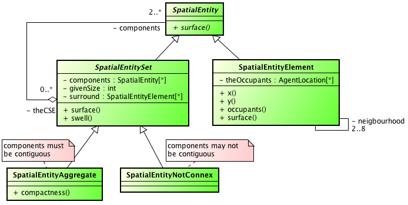
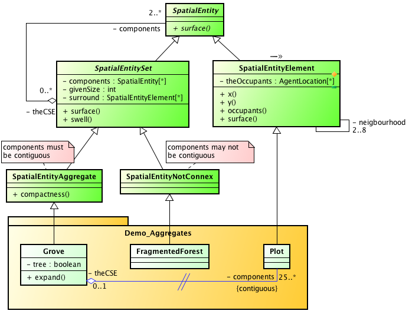
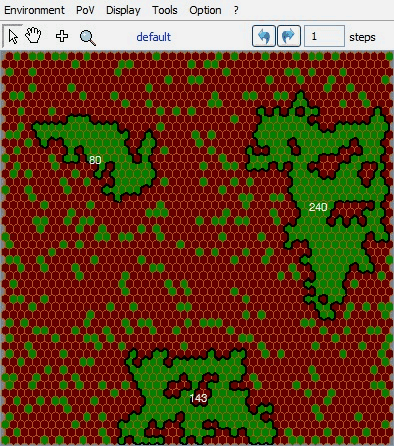
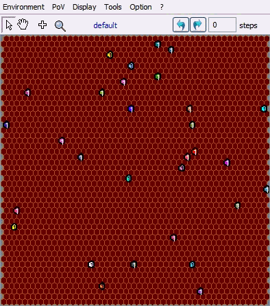
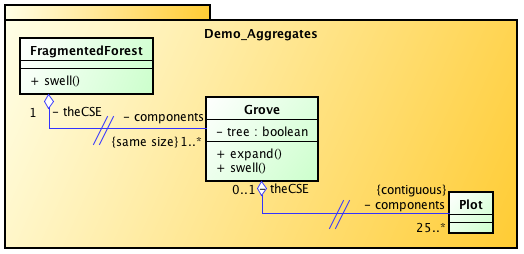
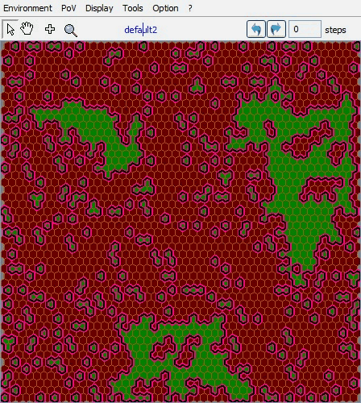

|
Demo_AggregatesGénérer des agrégats spatiaux dans CormasDemo_Aggregates est un modele didactique qui permet de tester deux facons différentes de créer des agrégats spatiaux avec Cormas. Ce modele introduit les principes de fonctionnement des entités spatiales agrégats de Cormas. Dans larbre dhéritage des entités spatiales génériques de Cormas, lentité spatiale composée générique sappelle "SpatialEntity_Set". Elle est spécialisée en:
 Les opérations dagrégation-désagrégation reposent sur lassociation "est composée de" entre SpatialEntitySet et SpatialEntity, qui se traduit en deux attributs: les «components» (une collection dentités spatiales de niveau inférieur) et «theCSE» (lappartenance éventuelle a des entités spatiales de niveau supérieur). Dans le modele Demo_Aggregates, 3 entités sont définies: Plot (sous classe de SpatialEntityElement), Grove (sous classe de SpatialEntityAggregate) et FragmentedForest (sous classe de SpatialEntityNotConnex):  Diagramme de class UML du modele. Lassociation dagrégation est redéfinie entre Grove et Plot (le symbole // représente cette redéfinition). Premier scénario (initForests - StepForests)les composants des Groves sont définis comme des ensembles de plots contiguës partageant une meme condition (tree). Linitialisation charge une grille spatiale constituée de 50 * 50 cellules (instances de la classe Plot) a partir dun fichier (3forests.env). Chaque plot a un attribut #tree (condition dagrégation) ayant la valeur boolean true ou false. Linstanciation effective de Groves (SpatialEntityAggregate) se fait en sélectionnant les Plots connectés étant #tree, plus une contrainte supplémentaire sur un nombre minimum (fixé a 25) de plots contigus vérifiant la condition dagrégation.Faire coexister dans le meme modele plusieurs entités spatiales définies a différents niveaux offre une grande flexibilité pour écrire la dynamique du modele. Certains processus sont plus faciles a décrire au niveau cellulaire (newState), et pour dautres, le niveau agrégé est plus approprié (expand ou swell). StepForest: propose 2 dynamiques simultannées. Dans cet exemple didactique et simple, chaque Plot a une probabilité fixe (tres faible) de changer son état. De plus, au niveau des bosquets, un processus détalement a partir des bords sécrit comme suit: des cellules du bord extérieur sont agrégées a la foret (seul un nombre donné de cellules sont sélectionnées, correspondant au centieme du nombre total de composantes de lentité forestiere). Afin de garder une compacité aux entités forestieres, la priorité est donnée aux cellules qui sont entourées par le plus grand nombre de cellules déja agrégées.  Second scénario (setAggregatesFromRandomSeeds - swellForests)10 cellules germinales sont choisies aléatoirement dans la grille spatiale de 50 * 50. 10 agrégats sont créés a partir de ces graines (donc avec un seul composant unique). Le processus de construction itératif des agrégats repose sur lintégration, parmi les cellules appartenant au bord extérieur de chaque agrégat, de toutes celles qui nappartiennent pas encore a un autre agrégat (swell).
Troisieme scénario (init2AggregateLevels - step2AggregateLevels)A partir du meme état initial (chargement du fichier 3forests.env), des aggrégats de bosquet (Grove) sont créés a partir des cellules en foret. Puis des agrégats FragmentedForest sont créés a partir des bosquets sur le critere de la taille, cad quune instance de FragmentedForest contient des bosquets de meme taille. Dans cette configuration, on obtient 7 FragmentedForests (1 of 128 groves of 1 plot, 1 of 49 groves of 2 plots, 1 of 21 groves of 3 plots, 1 of 1 grove of 240 plots, 1 of 1 grove of 80 plots, 1 of 2 groves of 4 plots, 1 of 1 grove of 143 plots).  Pour la dynamique (step2AggregateLevels: t), seuls lagrégat FragmentedForest composés des plus petits bosquets est activé. Ses composants sétirent alors depuis leur bord extérieur (swell). 
|
|